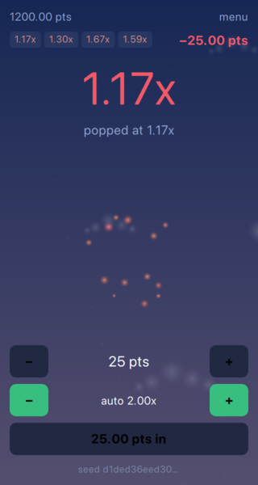

Everything up to here decides what happens. Nothing up to here makes anyone want to watch it happen. This chapter is the difference between a number that goes up and a round somebody sits through.
None of it touches the wallet or the crash point. That separation is the point: effects are allowed to exaggerate precisely because they cannot change the result.
The crash is the loudest moment in the game and it lasts a tenth of a second, so it gets four things at once: particles, a jolt, a flash and a sound. They are separate components, all fired from the same signal.

// A short burst, not a fountain: everything is thrown out in a tenth of a // second and the emitter goes quiet on its own. emitterType: ParticleBase.Gravity duration: 0.1 maxParticles: 90 emissionRate: 900
One emitter, declared once and restarted, rather than an effect created per crash. A game that builds a new emitter every round leaks a little each time and gets slower the longer somebody enjoys it. autoStart is false and the scene calls start() from onRoundCrashed, positioned at wherever the balloon had climbed to before the binding pulls it back down.
The texture is a 32x32 white spark. It is white on purpose - the emitter tints it, so one file covers every colour of effect the game may want later.
A jolt wants to move the scene by a few pixels. Anchored children refuse to be moved, and dropping their anchors to allow it costs the layout.
// Four swings in a quarter of a second, each weaker than the last: the pop is // felt, and the multiplier underneath is readable again before the player has // decided how they feel about it. ParallelAnimation { id: shake NumberAnimation { target: _ property: "phase" from: 0 to: 8 * Math.PI duration: root.duration } NumberAnimation { target: _ property: "amplitude" from: root.magnitude to: 0 duration: root.duration easing.type: Easing.OutQuad } }
The component animates nothing but two numbers. The scene applies them as a Translate transform, which happens after layout and therefore has no opinion about anchors:
transform: Translate {
x: screenShake.offsetX
y: screenShake.offsetY
}
The amplitude decays to zero over 260 ms while the phase runs through four swings, and the vertical axis uses a different frequency so the jolt traces a figure instead of sliding back and forth along one line.
A quarter of a second is a deliberate ceiling. The multiplier has to be readable again before the player has finished deciding how they feel about the round that just ended.
// Eight seconds that close on themselves: every partial in the loop lasts a // whole number of cycles, so the wrap is silent rather than almost silent. // It stays a wav on purpose - an mp3 would arrive with the encoder's own // padding at both ends, which is exactly the gap the loop is avoiding. BackgroundMusic { id: music source: Qt.resolvedUrl("../assets/snd/ascent-loop.wav") volume: 0.3 }
The music is generated rather than licensed, which turns the usual hardest part of looping audio into arithmetic: the loop is eight seconds long and every partial in it lasts a whole number of cycles, so the waveform at the end of the loop is the waveform at the start. Notes whose tails run past the end are written back into the beginning of the same buffer.
The format is the other half of it. An mp3 arrives with encoder padding at both ends, and that padding is audible as a gap on every repeat. A wav has none, costs 705 KB for eight seconds, and never has to be argued with.
Short effects are GameSoundEffect rather than BackgroundMusic - the first is built for low latency, the second for long compressed files. Each effect is declared once and replayed, for the same reason the emitter is: loading a sound at the moment it is needed is how a game ends up with a pop that arrives after the balloon has gone.
Felgo pauses every instance of both types from settings.soundEnabled and settings.musicEnabled, and stores those across runs, so muting the game is a property assignment rather than a bookkeeping exercise.
The balloon climbs and the multiplier has no ceiling, so a background that moves with it has to be endless in both senses: it must never run out of sky, and it must never stop scrolling.
// Altitude is read off the logarithm of the multiplier rather than the // multiplier itself, so the sky keeps moving at 50x instead of having left // the atmosphere at 5x. It is also the same curve the balloon rises on. property real climb: Math.log(Rounds.engine.multiplier) // The multiplier falls back to 1.00 when the next round opens. Gliding down // through that is a descent; snapping is a jump cut. Behavior on climb { enabled: Rounds.engine.state === RoundEngine.Betting NumberAnimation { duration: 900 easing.type: Easing.InOutQuad } }
Reading altitude off the logarithm is what keeps it moving. Tied to the multiplier directly, the scenery would have left the atmosphere by 5x and stood still for the rest of the round - which is exactly the part of the round worth watching.
Each layer scrolls at its own multiple of that, and wraps:
// The pair covers [-height, height], so the visible band is always inside it. readonly property real wrapped: ((root.offset % root.height) + root.height) % root.height - root.height
The same field of clouds is drawn twice, one above the other, and the pair is slid by the wrapped offset. Because the pair always covers the range from minus one height to plus one height, the visible band is inside it wherever the scroll has got to. There is no seam to catch and no special case at the top of the layer, which is the failure mode of the more obvious version with a single copy and a reset.
Cloud positions are hashed from the index rather than drawn at random. Both copies have to agree on where every cloud is, or the wrap becomes visible the moment it happens.
Two details that are cheaper than they look: the sky darkens by fading one fixed gradient over another instead of recolouring gradient stops, because moving stops mean a new gradient texture every frame; and the drop back to 1.00x when the next round opens is animated only while betting is open, so the sky descends instead of cutting.
Everything above is free to exaggerate. The multiplier is not.
// Zero at 1.00x, one at 10x and pinned there above it. Every bit of theatre // below reads off this single number. readonly property real tension: Math.min(Math.log(Rounds.engine.multiplier) / Math.LN10, 1)
One value, zero at 1.00x and one at 10x, drives the size, the colour and the pulse. The text itself is bound straight to the engine with no easing and no animated counter - a number that slides towards its target is a number somebody could read, tap on, and turn out not to have cashed out at.
// A heartbeat that tightens as the round goes on: slow and shallow down at // 1.2x, quick and sharp past 8x. The duration is only read when a loop ends, // so a round that climbs fast speeds up between beats instead of stuttering // inside one. SequentialAnimation { running: Rounds.engine.state === RoundEngine.Running loops: Animation.Infinite alwaysRunToEnd: true NumberAnimation { target: _ property: "pulse" to: 1 + 0.03 + 0.05 * root.tension duration: (900 - 620 * root.tension) * 0.35 easing.type: Easing.OutQuad } NumberAnimation { target: _ property: "pulse" to: 1 duration: (900 - 620 * root.tension) * 0.65 easing.type: Easing.InOutQuad } }
The beat tightens from roughly 900 ms down to 280 ms as the round climbs. Animation durations are read when a loop starts and not while it runs, so a fast round speeds up between beats instead of stuttering inside one.
Every colour and every text size the interface uses is a property of a single QML singleton, Style. The pictures are exempt - the sky gradient, the balloon and the sparks keep their colours where they are drawn, because those are chosen against each other rather than against the rest of the screen.
// Seven sizes, each far enough from the next that two of them beside each // other cannot be mistaken for one size drawn twice. Anything that needs a // size not on this list is either shouting or hiding. readonly property int displaySize: 56 readonly property int titleSize: 48 readonly property int headingSize: 18 readonly property int bodySize: 16 readonly property int labelSize: 14 readonly property int captionSize: 12 readonly property int fineSize: 10
Two details are worth copying. The singleton is not called Theme, because Felgo declares a Theme singleton of its own: reusing the name resolves to the wrong object in whichever scope Felgo's import happens to reach, and it fails as an undefined property rather than as an error naming the clash.
And because this game loads its QML as plain files next to the binary, the singleton is declared in a qmldir beside them rather than in the module that carries the C++ types:
singleton Style 1.0 Style.qml
Nothing in this chapter runs a clock of its own. The particles, the shake, the flash and the punch are all fired by onRoundCrashed; the sky and the tension are bindings on a multiplier that was already changing. The scene has one moving part and everything else is a consequence of it.
That is the test worth applying to any of it: an effect that needs its own clock will eventually disagree with the round, and it will disagree in the frame that matters most.